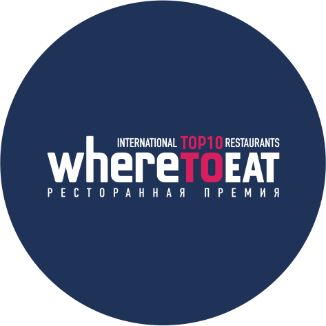
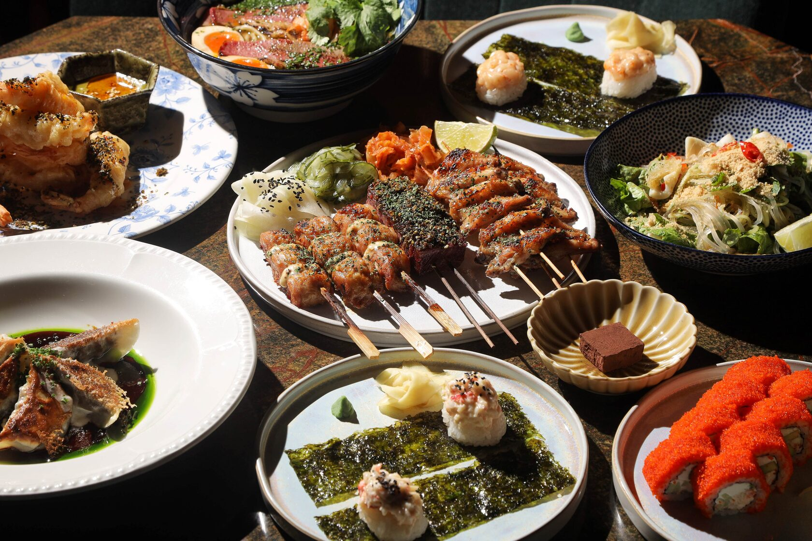
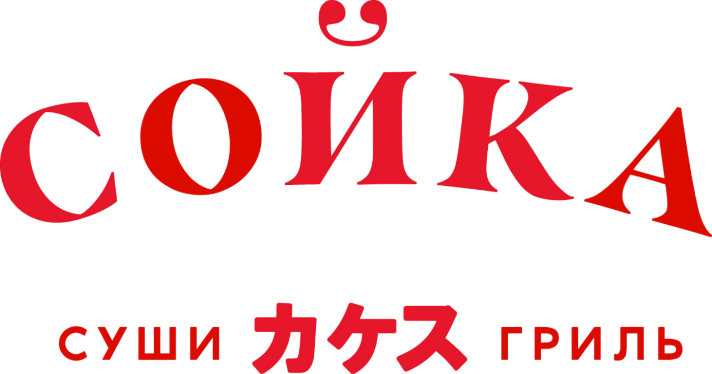
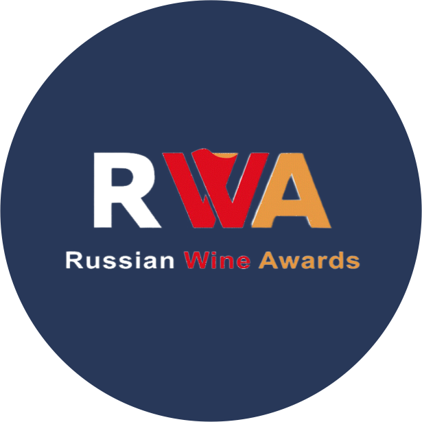

Ежегодно в ТОП-10 лучших ресторанов Урала по версии WhereToEat


Ваш любимый паназиатский ресторан в Екатеринбурге


«Сойка» расположилась в старинном особняке с белыми кирпичными сводами, который относится к архитектурному ансамблю усадьбы купца Тупикова. Интерьер — лимонно-изумрудный с золотой барной стойкой и изобилием зелени.


Популярный азиатский ресторан в старинном особняке с белыми кирпичными сводами, лимонно-изумрудным интерьером, золотой барной стойкой и изобилием зелени. В меню — хрустящие баклажаны XO, булочки бао с уткой, желе алоэ с манго, суши, роллы, рамен и том-ям.
— GreatList

Ежегодно в ТОП-10 лучших ресторанов Урала по версии WhereToEat
В списке лучших ресторанов Екатеринбурга по версии международного ресторанного гида GreatList
Дважды лучший шеф-кондитер года по версии WhereToEat 2024, 2026

2 звезды в номинации «Лучшая оригинальная карта» по версии Russian Wine Awards 2024
2 звезды в номинации «Лучший выбор вин по бокалам» по версии Russian Wine Awards 2024
Дважды лучший шеф-сомелье Урала по версии WhereToEat 2023, 2025


Меню Сойки объединяет энергию улиц Юго-Восточной Азии, современный взгляд на гастрономию и легкость формата - все то, ради чего сюда хочется возвращаться.
Посмотреть меню


В барной карте баланс между узнаваемыми напитками и редкими находками. А наша винная карта была удостоена двух звезд престижной премии Russian Wine Awards.
Посмотреть картуВыберите дату и время в форме бронирования — вы увидите все актуальные варианты. После заполнения на почту придёт письмо о том, что бронь ожидает подтверждения, а как только мы её подтвердим — письмо о подтверждении. Если бронь по каким-то причинам окажется невозможной, мы обязательно свяжемся с вами.
Да — заказать можно на сайте доставки delivery.soyka.rest.
Да, с подарочной картой. Она действует бессрочно и может быть использована многократно, до исчерпания номинала — в ресторане и для оплаты заказов с собой. Если суммы карты недостаточно, можно доплатить. Для оплаты покажите официанту QR-код и номер карты.
Да. С каждого заказа начисляются бонусы — от 5% до 15% в зависимости от статуса (Друг, Лучший друг, Амбассадор, Патрон), в день рождения и неделю до и после — 15%. Один бонус равен одному рублю, бонусами можно оплатить до 50% заказа в ресторане, и они не сгорают. Бонусы нельзя тратить на винную карту, заказы с собой и доставку — на них можно только копить. Получить карту.
ВС–ЧТ с 12:00 до 00:00, ПТ–СБ с 12:00 до 01:00.
Екатеринбург, ул. 8 Марта, 6 — в старинном особняке с белыми кирпичными сводами, который относится к архитектурному ансамблю усадьбы купца Тупикова.
Ответьте на пару вопросов в форме заявки, чтобы мы узнали друг друга ближе.
Посмотрите вакансии на нашем сайте.
Через форму обратной связи.
Ответьте на пару вопросов, чтобы мы узнали друг друга ближе
Оставить заявку